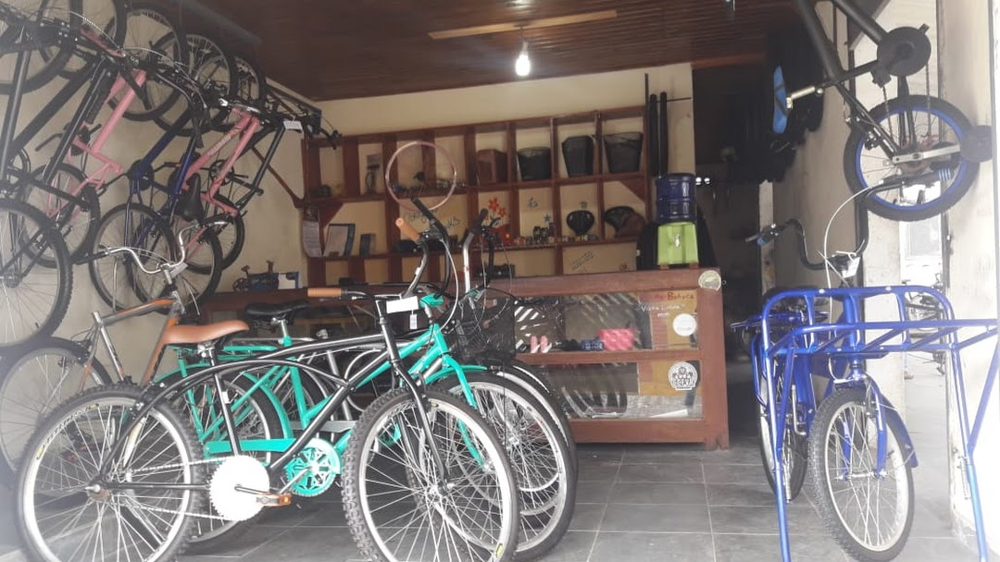

Consertos e Acessórios
Personalize, conserte e melhore sua bike.
Confira serviços disponíveis em nossa oficina:
- Lavagem e lubrificação
- Manutenção de pneus, freios e marchas
- Enrraiamento e desempeno
- Revisão completa
- Peças e acessórios
Confira serviços disponíveis em nossa oficina:
Entre em contato com a gente e reserve sua manutenção!